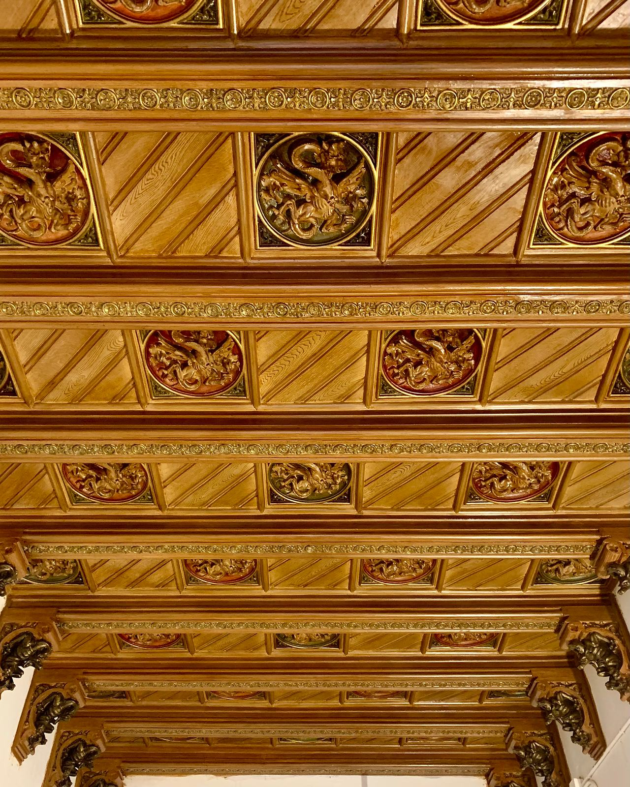
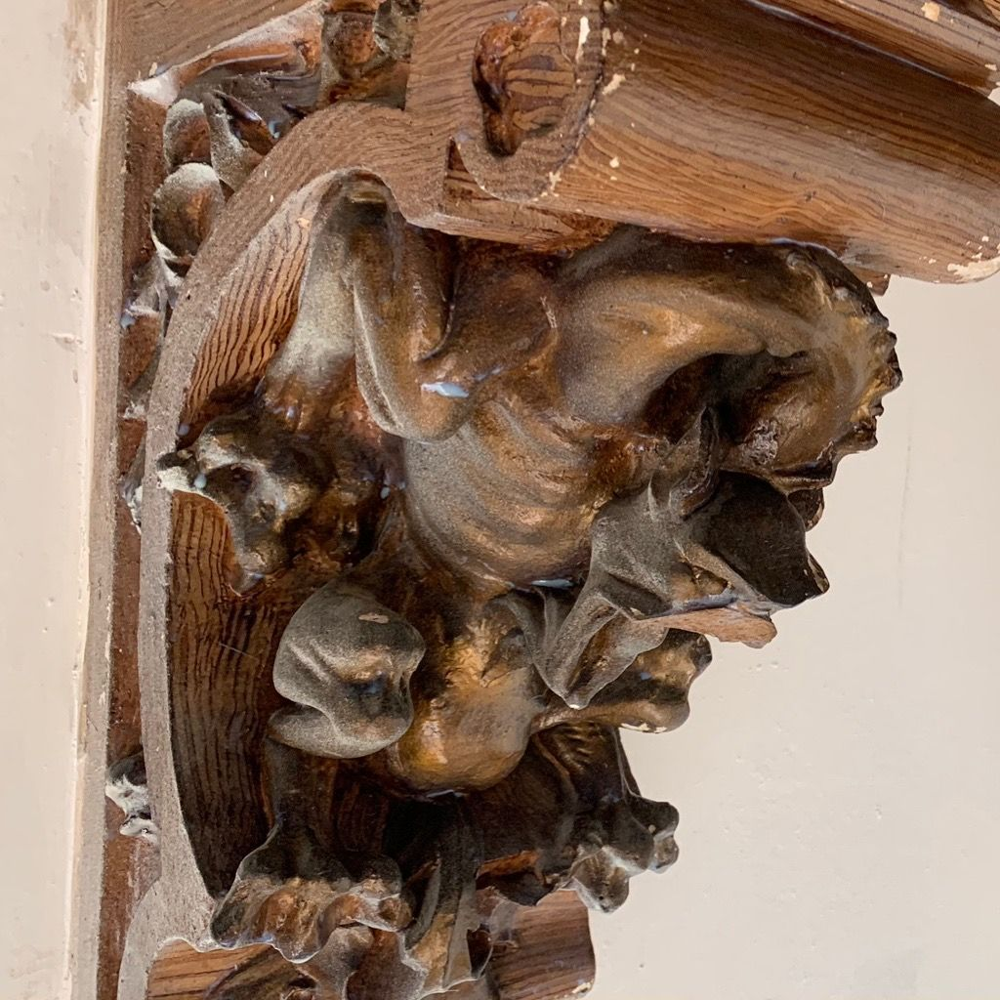
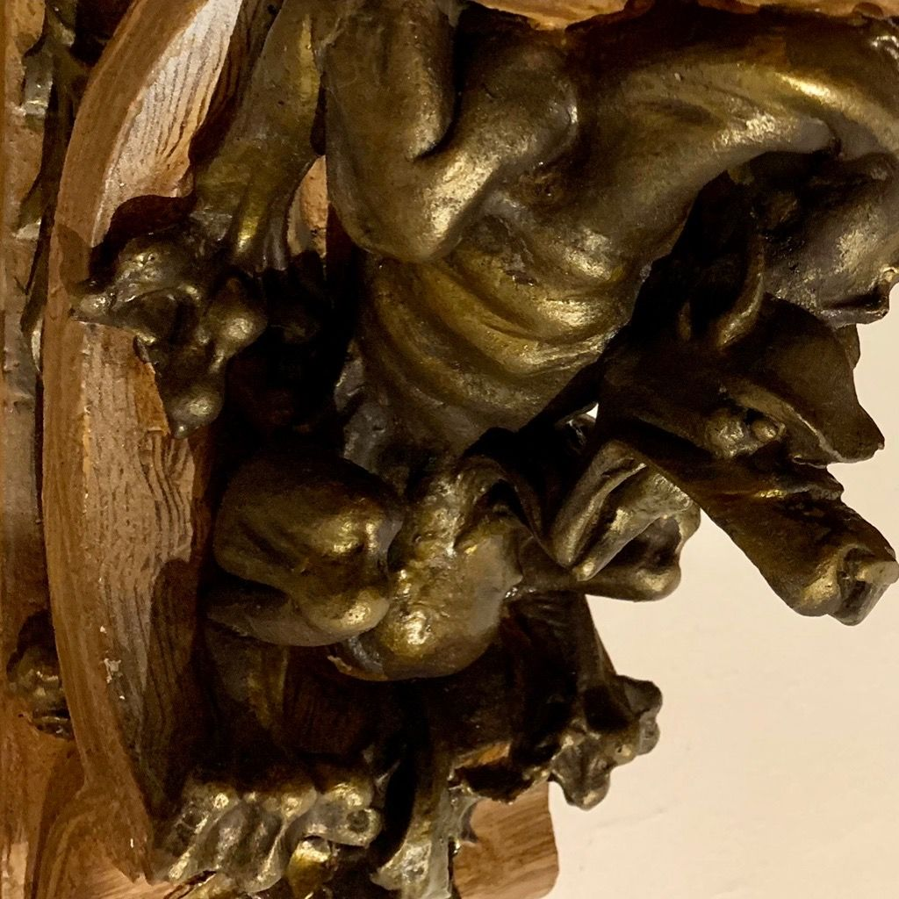
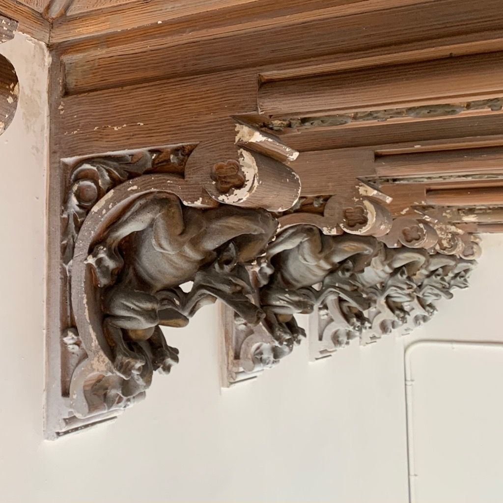
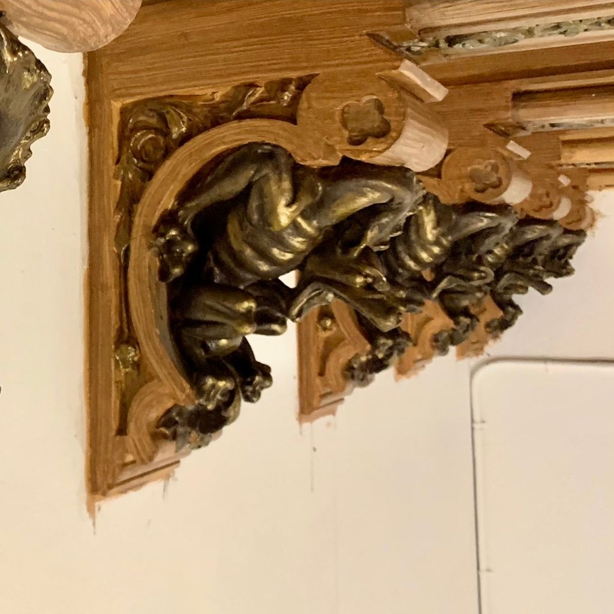

Sostres decorats, daurats i enteixinats
Enteixinats de fusta, motllures de guix, policromies i daurats. Un sostre decorat és el primer que mira qui entra en una sala, i l’últim que s’hauria de repintar sense pensar-hi.

Or, fusta i policromia
Enteixinats, arcs i voltes amb perfils daurats i una mènsula tallada. Prem una foto per veure-la gran, amb la seva fitxa.
Tres materials, tres tractaments
Un sostre decorat gairebé mai no és d’un sol material. Cada capa té la seva lesió típica i la seva manera de reparar-se, i l’ordre de treball va de dins cap a fora: primer el suport, al final l’or.
- Fusta tallada i enteixinats
- Es revisa l’estat de la fusta, l’atac d’insectes xilòfags i les unions. Es consolida el que s’ha afeblit, es tracta contra els insectes i es reposen les peces perdudes tallant-les a partir de les que es conserven.
- Guix i estuc
- Motllures, florons i relleus: es netegen, es fixen les zones soltes i es reposen els trams perduts amb motlles trets de les peces sanes, perquè la motllura nova sigui la mateixa, no una de semblant.
- Policromia i daurat
- Es fixa la capa de color o d’or que s’aixeca, es neteja amb mètodes que no l’arrosseguin i es reintegren les llacunes amb la tècnica de l’original: daurat a l’aigua o al mordent, color al tremp o a l’oli.
Dues mènsules, abans i després del daurat
Hi ha dues maneres de daurar. A l’aigua: el pa d’or s’assenta sobre capes de guix i bol, i es pot brunyir fins que brilla com el metall. Al mordent: l’or s’enganxa amb un adhesiu, el mordent; fa una brillantor més continguda i, amb mordent a l’oli, resisteix millor la humitat. Quan es refà una peça, es repeteix la tècnica de l’original.




Sales on hem treballat
El nostre equip ha participat en obres d’interiors d’edificis singulars de Barcelona i Terrassa.
- 2010
Teatre PrincipalTerrassa
- c. 2009
Reial Cercle ArtísticBarcelona
Tots els interiors de la primera planta, convertida en el restaurant El Cercle.
- 2008
Fonda EspanyaBarcelona
Treballs a tots els interiors, les escales principals i el pati de llums, a més dels esgrafiats.
Sobre sostres i daurats
Es pot netejar un daurat sense perdre or?
Sí, si es fa amb el mètode adequat. L’or és una làmina d’una fracció de micra: no admet fregar ni productes agressius. Primer es comprova en una zona petita què neteja sense arrossegar, i el daurat a l’aigua, que és sensible a la humitat, es neteja d’una altra manera que el daurat al mordent.
Cal desmuntar el sostre per treballar-hi?
Normalment no. Es treballa in situ des d’una bastida, amb la sala protegida. Només es desmunten peces soltes que corren perill de caure o que necessiten un tractament que no es pot fer en alçada.
Es poden reposar motllures que ja no hi són?
Si en queda un tram sa de la mateixa motllura, sí: se’n treu un motlle i es reprodueix igual. Si no en queda cap, es treballa amb fotografies antigues o amb motllures equivalents del mateix edifici. El que no fem és inventar ornaments que no hi eren.
El meu sostre té taques d’humitat. Per on començo?
Per la causa: una filtració de la coberta, un baixant o una instal·lació del pis de dalt. Pintar o daurar abans de resoldre-la és llençar els diners. Com que som una divisió de Lamper Instalaciones y Mantenimiento, també podem coordinar la reparació de la instal·lació.
Un sostre que mereix tornar a ser mirat?
Envia’ns fotos del sostre sencer i, de prop, de les zones malmeses. Et direm què li passa i com ho enfocaríem.